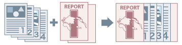

Предусмотрена возможность вставить переднюю и заднюю обложки. Для обложек можно использовать бумагу, отличающуюся от бумаги, используемой для страниц содержания, и указать сторону печати.

1.
Откройте вкладку [Источник бумаги].
2.
Нажмите [Настройки передней/задней стороны обложки].
3.
Выберите обложку, которую нужно вставить, в [Настройки обложки].
4.
Укажите [Источник бумаги] и [Печать на] → нажмите [ОК].
Если вставляется предварительно распечатанная обложка: Загрузите обложку в устройство вставки принтера → выберите [Источник бумаги] → Устройство вставки.
Необходимые параметры
Вставка предварительно отпечатанных страниц: Устройство вставки
Функции, недоступные в сочетании с данной функцией
Вкладка [Основные настройки] или [Окончательная обработка] → [Окончательная обработка] → [Группирование] или [Поворот]
Справки
На загруженной в устройство вставки бумаге печатать нельзя.